Correction on disturbed solution
Now, let’s consider a deliberately disturbed solution. The purpose of this step is to check that the correction solvers also work with a solution that is very close to the real solution, but not exact. In this section, we will consider a manually disturbed solution, i.e. the exact solution to which we’ve added a small, analytically known perturbation.
As explained above, we begin by considering \(\tilde{\phi}\) as a manually perturbed solution defined by
where \(u_{ex}\) defines the exact solution to the problem, \(P\) the perturbation applied to it and \(\epsilon\) is a real number that allows the amplitude of the perturbation to be easily increased or decreased.
In this section, we’ll assume that \(\tilde{\phi}\) is in \(\mathbb{P}_k\) with \(k=10\).
|
Notice that by taking \(\epsilon=0\), we return to the case of correction on an exact solution presented in Section "Correction on exact solution". |
In our case, we will choose to consider \(P\) as being of the same form as our exact solution (defined with different parameters), but we could very well consider a completely different perturbation.
|
Note that the form of the perturbation has a huge influence on the accuracy of the solvers, and that the difficulty lies in the following cases where its expression is not explicitly known (as in the case of \(\phi\)-FEM in Section "Correction on \(\phi\)-FEM solution" or FNO in Section "Correction with FNO"). |
In the case of Circle geometry where we consider the problem \ref{Corr.pb.circle.1}, the perturbation will be defined by
where \(S_p\in[0,1\)] is the amplitude of the signal, \(f_p\in\mathbb{N}\) can be associated with the "frequency" of the signal and \(\varphi_p\in[0,1\)] the phase at the origin.
In the case of Square geometry where we consider the problem \ref{Corr.pb.square.1}, the perturbation will be defined by
where \(S_p\in[0,1\)] is the amplitude of the signal, \(f_p\in\mathbb{N}\) can be associated with the "frequency" of the signal and \(\varphi_p\in[0,1\)] the phase at the origin.
|
Note that for the boundary conditions of the solution to be satisfied, i.e. for \(\tilde{\phi}=u_{ex}\) on \(\Gamma\), it is essential that \(P=0\) on \(\Gamma\). In the case of both circle and square, we will then take \(\varphi_p=0\). |
Recall the relative errors obtained by standard FEM and \(\phi\)-FEM on the circle and on the square for frequencies \(f\in\{1,2,3,4\}\) for the homogeneous (Figure 1) and non-homogeneous problem (Figure 2).
Figure 1. figure
|
Figure 2. figure
|
|
In the previous results, we use the direct method to impose the boundary conditions with \(\phi\)-FEM. |
1. Results with differents \(\epsilon\)
The aim of this section is to test correction by addition (without IPP) and correction by multiplication by varying the amplitude of the perturbation (in other words, by varying \(\epsilon\)).
We will try to separate the cases according to the frequencies considered. In other words, for \(f,f_p\in\{1,2,3,4\}\), we’re interested in the following three cases. The first is the case where the solution frequency is greater than the perturbation frequency (\(f>f_p\)), i.e. a highly variable solution and a less variable perturbation. The second is where the solution and perturbation frequencies are equal (\(f=f_p\)), i.e. the solution and perturbation have the same variability. The last category covers cases where the perturbation is "nastier" than the solution, i.e. it has a higher frequency than the solution (\(f<f_p\)).
In this section, we will consider for the circle the solution defined in [_first_problem] and for the square the solution defined in [_problem].
Results with standard FEM :
First we will consider the standard FEM method on the homogeneous case (i.e. with \(\varphi=0\)) and then on the non-homogeneous case (i.e. with \(\varphi=1\)).
-
Results on the homogeneous case :
First, we consider the correction by adding (without IPP) on the Circle problem (Figure 3) and on the Square problem (Figure 4).
Figure 3. figure
|
Figure 4. figure
|
Then, we consider the correction by multiplying on the Circle problem (Figure 5) and on the Square problem (Figure 6).
Figure 5. figure
|

Figure 6. figure
|
Observation : We can make a few comments on the results obtained:
-
First of all, it would therefore seem that, overall, the smaller the perturbation applied (i.e. the smaller the \(\epsilon\)), the more efficient the addition and multiplication correction solvers are in terms of accuracy.
-
Then, it would appear that, as with the standard FEM and \(\phi\)-FEM solvers without correction, the more the solution varies (i.e. the larger \(f\)), the greater the error. This is a fairly intuitive result, since the more the solution varies, the more points are needed to approximate it.
-
It would also seem that for \(\epsilon=1\) (i.e. a large perturbation), the \(\epsilon\) parameter has a greater impact on the multiplicative corrector than on the additive corrector. We explained earlier the benefits of elevating the problem, which could be beneficial here. Results on elevation will be presented in the Section 2.
-
In view of the results obtained here, it would also appear that, overall, correction by addition is more effective than correction by multiplication. Moreover, correction by addition has more advantages than correction by multiplication. In particular, if the solution cancels out on the domain, correction by multiplication will require elevating the problem sufficiently so that it no longer cancels out, unlike correction by addition.
-
There is one final and rather important point to make. In fact, if we take a closer look at the results, we can see that in the case of correction by adding, the errors only seem to depend on the frequency of the perturbation and not on that of the solution (at a fixed \(\epsilon\)). This is a result that has been explained theoretically in the case of correction by multiplication on a elevated problem in the Section "Interest of elevating the problem" (for \(m\) large, similar to correction by addition as explained above). Thus, as we have shown (in Section "Comparison of correction methods") that for \(m\) large, the error of correction by multiplication on a elevated problem converges to the error of correction by addition, we recover this result on correction by addition.
-
Results on the non-homogeneous case :
First, we consider the correction by adding (without IPP) on the Circle problem (Figure 7) and on the Square problem (Figure 8).
Figure 7. figure
|
Figure 8. figure
|
Then, we consider the correction by multiplying on the Circle problem (Figure 9) and on the Square problem (Figure 10).
Figure 9. figure
|
Figure 10. figure
|
Observation : In view of the results obtained, it would appear that the conclusions are the same as for the homogeneous case.
|
En considérant \(\tilde{\phi}\) dans \(\mathbb{P}_2\) et le problème homogène, on va appliquer la correction by adding on the Circle problem (Figure 11) and on the Square problem (Figure 12).
And by considering the correction by multiplying on the Circle problem (Figure 13) and on the Square problem (Figure 14).
Observation : In view of the results obtained here, it seems that considering \(\phi\) only in a space of degree 2 is not sufficient to considerably improve the errors obtained by standard methods, even when considering an exact solution. |
Results with \(\phi\)-FEM :
Then we will consider the \(\phi\)-FEM method on the homogeneous case (i.e. with \(\varphi=0\)) and then on the non-homogeneous case (i.e. with \(\varphi=1\)).
-
Results on the homogeneous case :
First, we consider the correction by adding (without IPP) on the Circle problem (Figure 15) and on the Square problem (Figure 16).
Figure 15. figure
|
Figure 16. figure
|
Then, we consider the correction by multiplying on the Circle problem (Figure 17) and on the Square problem (Figure 18).
Figure 17. figure
|

Figure 18. figure
|
Observation : An interesting result can also be observed. Indeed, it seems that in the case where \(f=f_p\), the multiplication correction with \(\phi\)-FEM seems to approach the solution almost perfectly for all \(\epsilon\) considered. In fact, in the homogeneous case, for \(f=f_p\) the perturbation is identical to the solution (i.e. \(P=u_{ex}\)) and so the solution injected into the correction solvers is of the form
In the case of correction by multiplication, we have \(\tilde{u}=\tilde{\phi}C\). So for \(\tilde{u}=u_{ex}\), we must have
So if the solution does not cancel out on \(\Omega\), we must have
By imposing \(C=\frac{1}{1+\epsilon}\) on \(\Gamma\) for FEM instead of \(C=1\), we should get closer to the \(\phi\)-FEM results obtained. We can see in Figure 19 and Figure 20 that we obtain the expected results for FEM by changing the boundary condition \(C=1\) to \(C=\frac{1}{1+\epsilon}\).
Figure 19. figure
|
Figure 20. figure
|
|
It should be noted, however, that in practice, for example in the case where \(\tilde{\phi}\) is a \(\phi\)-FEM solution or an FNO output, this case is not very realistic. There’s no reason to expect the form of the perturbation created by the \(\phi\)-FEM solver or by the FNO to be exactly identical to the solution under consideration. |
-
Results on the non-homogeneous case :
First, we consider the correction by adding (without IPP) on the Circle problem (Figure 21) and on the Square problem (Figure 22).
Figure 21. figure
|
Figure 22. figure
|
Then, we consider the correction by multiplying on the Circle problem (Figure 23) and on the Square problem (Figure 24). We start by considering the same \(\phi\)-FEM scheme as in the homogeneous case, i.e. here we don’t impose any boundary conditions.
Figure 23. figure
|
Figure 24. figure
|
Observation : We note that the multiplicative corrector using \(\phi\)-FEM seems to succeed, in a similar way to the homogeneous case, to correct the non-homogeneous problem without imposing the boundary conditions. In fact, there’s a subtlety to the scheme we’re considering here. Unlike \(\phi\)-FEM (without correction), the scheme is written on \(\tilde{\phi}\), which is non-zero at the boundary, and not on \(\phi\), which is zero at the boundary. This could explain this result, whereas in the case of \(\phi\)-FEM (without correction), we can’t avoid imposing boundary conditions.
We will now use the direct method to impose the boundary condition. For this method, we’re tempted to consider the solution \(\tilde{u}=\tilde{\phi}C+g\) as the solution to the multiplication correction problem. In fact, unlike the classic \(\phi\)-FEM method, the \(\tilde{\phi}\) function that replaces our level-set in the formulation is non-zero at the boundary and so, by imposing \(C=1\) at the boundary, we’d have \(\tilde{u}=2g\). To avoid this problem, we will raise the problem by \(-g\) and consider \(\tilde{u}=(\tilde{\phi}-g)C+g\). We will test this method on the circle (Figure 25) and on the square (Figure 26).
Figure 25. figure
|
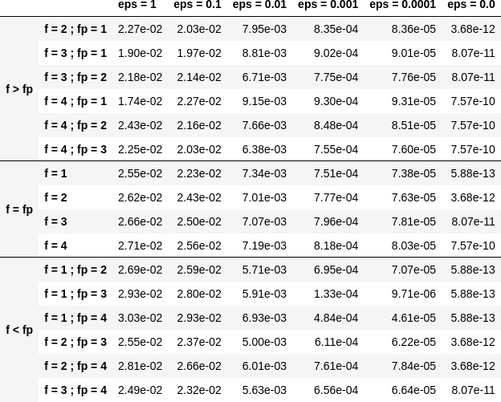
Figure 26. figure
|
We’re now going to test imposing boundary conditions with the dual method on the circle (Figure 27) and on the square (Figure 28).
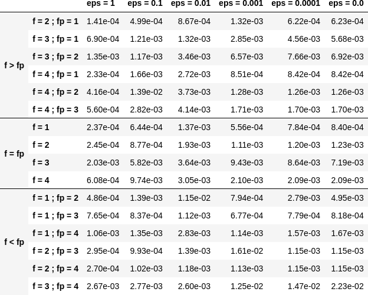
Figure 27. figure
|
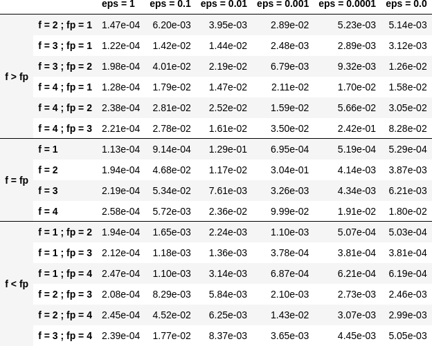
Figure 28. figure
|
Observation : It seems that by imposing the boundary conditions with the direct method, the errors are better when \(\epsilon\) is a bit large, especially for \(\epsilon=1\). For the dual method, it seems also works for imposing boundary conditions. However, we can see that it can become slightly stagnant when \(\epsilon\) is decreased. It’s possible that changing the stabilization parameters could have an impact here.
2. Results on the elevated problem
In this section, we aim to show numerically the interest of elevating the problem. To do this, we will consider the case of the circle with the solution defined in [_first_problem] and the case of the square with the solution defined in [_problem]. We will choose the homogeneous case (i.e. with \(\varphi=0\)) with \(S=0.5\) and set \(\epsilon=10^{-3}\).
Results with FEM :
Here, we consider some of the cases considered above, in order to test the correction by multiplying on an elevating problem with FEM (theoretical result presented in Section "Correction by multiplying on an elevated problem"). We will test this method on the circle (Figure 29 and Figure 31) and on the square (Figure 30 and Figure 32) for selected frequencies and by varying \(m\).
Figure 29. figure
|
Figure 30. figure
|
Figure 31. figure
|
Figure 32. figure
|
Observation : The numerical results obtained on the circle in Figure 29 and on the square \ref{corr_pert_fem_square_reh}, seem to show that the higher we raise the problem, the better the error. Furthermore, as explained in Section "Comparison of correction methods", we can see that by increasing \(m\), the error converges to the error obtained with the correction by adding (because the solution itself converges to the solution obtained with the correction by adding).
Results with \(\phi\)-FEM :
Now we to test the correction by multiplying on an elevating problem with \(\phi\)-FEM. We will test this method on the circle (Figure 33 and Figure 35) and on the square (Figure 34 and Figure 36) for selected frequencies and by varying \(m\). Here, we’re using the same scheme as in the homogeneous case, i.e. we’re not going to impose the boundary conditions using the direct or dual method.
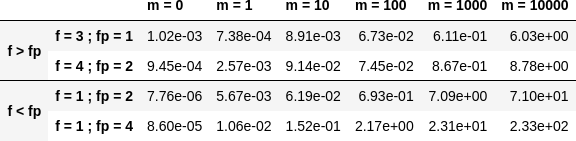
Figure 33. figure
|
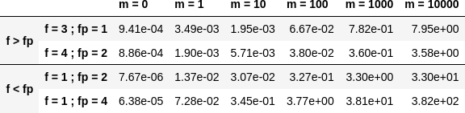
Figure 34. figure
|
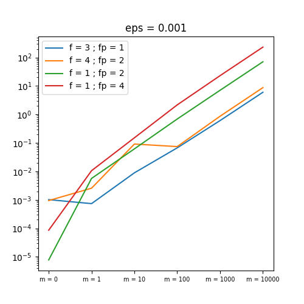
Figure 35. figure
|
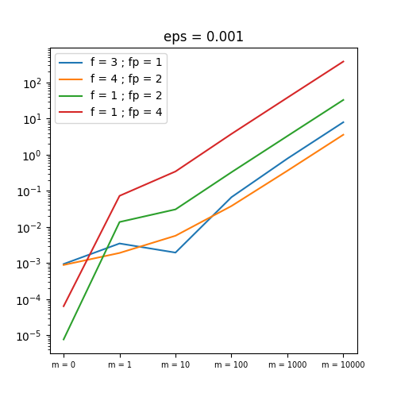
Figure 36. figure
|
Now, we impose the boundary conditions using the dual method, always considering the circle (Figure 37 and Figure 39) and on the square (Figure 38 and Figure 40) for selected frequencies and by varying \(m\).
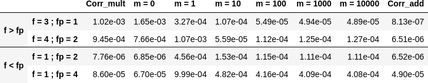
Figure 37. figure
|
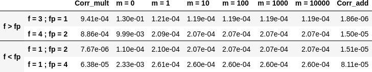
Figure 38. figure
|
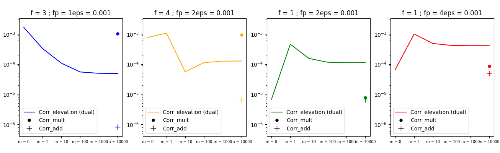
Figure 39. figure
|
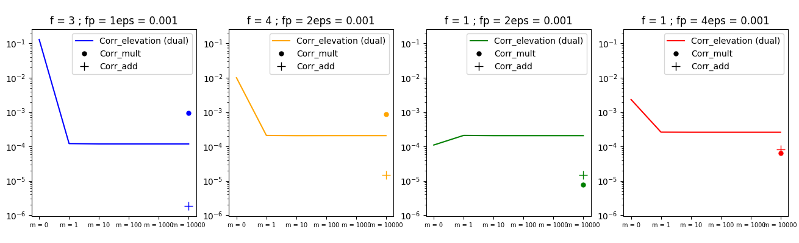
Figure 40. figure
|
Observation : It would appear that, in the case of multiplication correction on an elevated problem, we are forced to impose the boundary conditions using one of the two methods, unlike multiplication correction without elevation. By imposing boundary conditions using the dual method, it seems that in the case where the frequency of the solution is greater than the frequency of the perturbation (for \(f>f_p\)), we do reduce the error by increasing \(m\), but it doesn’t seem as efficient as in the case with FEM. Indeed, in all the cases considered here, correction by addition gives much better results. Moreover, for \(f< f_p\), it would appear that the enhancement is the opposite of the expected effect.
|
Note that the direct method is not applicable in the case of this problem because, as explained in the case of correction without elevation on a non-homogeneous problem, we are in some ways returning to the homogeneous problem. In fact, if we consider
\[\hat{u}=(\hat{\phi}-g-m)C+(g+m)=(\tilde{\phi}-g)C+(g+m)\]
with \(g=0\) because we’ve placed ourselves in the homogeneous case, which amounts to solving the problem without elevation. |